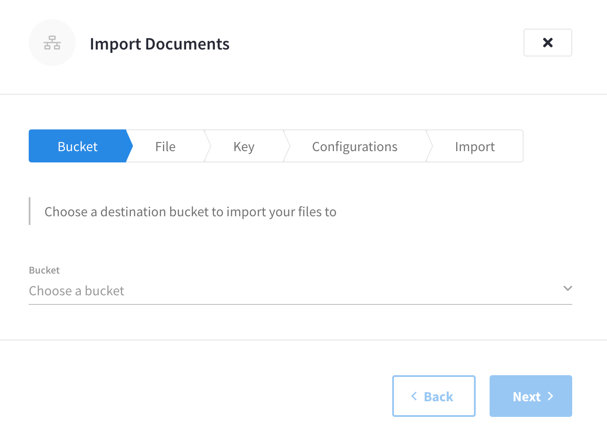
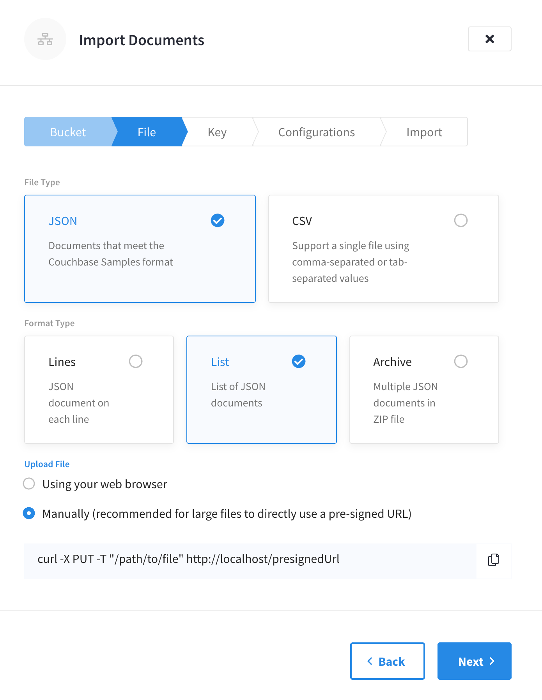

Import Data
Import JSON docs and CSV files, from a local machine or URL.
If you have a dataset in CSV form, or already converted to JSON (list or JSON docs), you can import it to Couchbase Capella from a local file on your laptop — or by pointing the import at a remote URL or a file on S3. This file archive can be zipped up before import.
Replication or backup-restore may be easier options if you are migrating to Capella from an on-premises database, but where that’s not possible then Import will give you flexibility over which documents are imported, and key-generation may be an advantage during a migration — keys for each document extracted from a CSV row or JSON list flat file can be auto-generated, or you may specify your own generating expression.
Using the Import Tool
The Import Screen
Navigate to the Tools tab under Clusters, and you’ll find the Import button.

Selecting this will open the Import flyout, and allow you to select a bucket, into which to import your file (if you don’t have the appropriate bucket, you’ll need to create one). 
Here you can choose JSON or CSV format, and specify a pre-signed URL to manually upload with a custom cURL command, or upload a file from your laptop.

Choose your Keys
Import offers many options for custom key generation, but defaults to using automatically-generated UUIDs for each JSON document in your file. For custom keys, you can use a combination of the following:
-
Characters (any combination of ASCII characters).
-
The values from a given field in the JSON document. Wrap the field name in
%, e.g. —%insurance_number%. Nested field names should be separated by dots —key::%name.full.name%. -
Custom generators, wrapped in
#, e.g.#MONO_INCR#.
Entering a custom generator expression will result in a prompt to test it with a representative sample of your JSON data.

#MONO_INCR# will simply toggle a number counter, starting at 1.
In the pictured example, above, %type%::#MONO_INCR# produces the document’s type field, two colon separators, and the number 1 (which would be incremented for subsequent records).
For a list of custom generators, see below.
Review
A range of options are available, to skip or alter the documents uploaded.
Having selected some or none of them, you have a chance to review the details of your import.
 Add e-mail addresses here to receive a report on the import.
Add e-mail addresses here to receive a report on the import.
| You cannot close the flyout and come back to the same step by reopening. All of the steps for the import process must be completed in one UI session. |
Progress Report
The screen will show upload status, but feel free to navigate away to other tasks — the email address(es) which you entered will receive notification once the import is complete, and status of imports can also be seen on the Tools tab of the Clusters page. You will see a link to download the import’s Records Log.
Options
Options chosen during the import process are listed here for reference. You will also find explanations for each field in tooltips, as you follow the steps in the Import Tool’s interface.
Field & Document Options
The following options are available, which modify which parts of an archive are imported:
-
Skip Documents — By default, all documents are loaded; set this to allow some to be skipped before importation stage.
-
Limit Documents — Stop loading after a certain number of documents. This can be used for partially loading large datasets.
-
Ignore Fields — Omit named fields from the uploaded documents. Use this in conjunction with the
%field_name%part of the custom generator to take out a document key from a field in a document — removing it from the body of the document, and placing it in the key name. -
Ignore Field Types — All fields will be interpretted by default as strings. Set this flag to get the tool to infer whether the field values are strings, or are integers of boolean values.
-
Omit Empty Fields — Rows in the CSV file which do not contain data are stored as emply strings in the JSON doc. Setting this flag will omit these fields from the uploaded document.
Custom Generators
The following two functions can be used along with the characters and field values used to generate custom key names:
-
#MONO_INCR#— integer, incremented by one for each document in the file archive, and starting at1. -
#UUID#— A generated Universally Unique IDentifier.
Further Reading
The import tool loads data into a bucket on your Cloud cluster. If you wish to restore a whole Cluster of bucket data, refer to the Backup Restoration page.